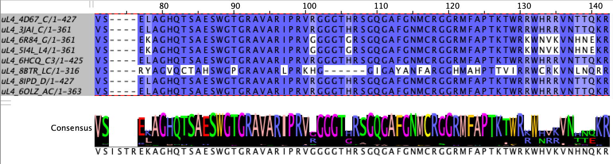
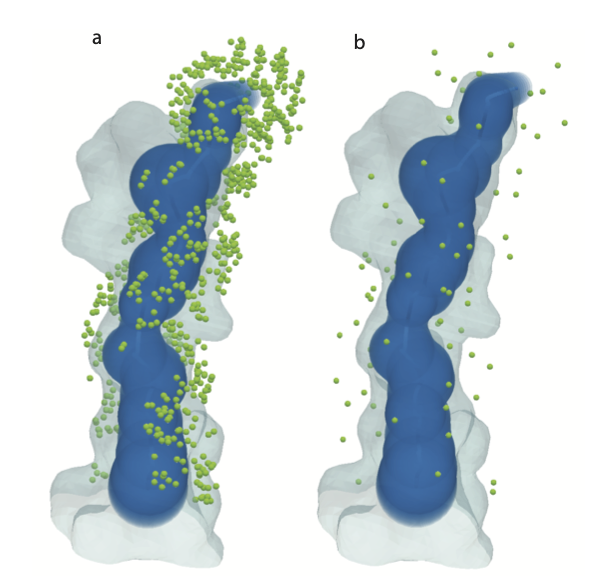
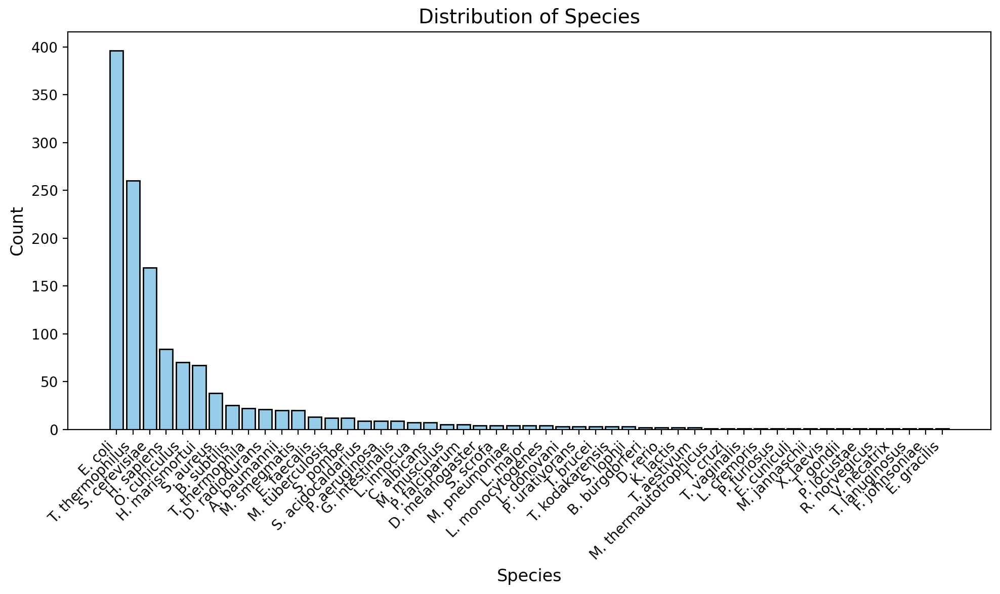

def find_conserved(column, threshold):
counter = Counter(column)
mode = counter.most_common(1)[0]
if (mode[0] != '-' and mode[1] / len(column) >= threshold):
return mode[0]
return NoneIntroduction
I present a complete Python protocol for assigning landmarks to the ribosome exit tunnel surface based on conservation and distance. The motivation and background for this topic can be found in my previous post. This blog post outlines implementation details and usage instructions for a more robust version of the protocol, available in full on GitHub.
Protocol Overview
Landmarks assigned on the surface of the tunnel are defined as the mean atomic coordinates of conserved residues that are close to the tunnel surface. The general steps in the protocol are:
- Run Multiple Sequence Alignment (MSA) on the relevant polymers and select residues that are above a conservation threshold.
- Of the conserved residues, select only the residues that are within a distance threshold of the tunnel as represented by the Mole model1.
- Extract the 3D coordinates of the selected residues.

Implementation Details
Separation by Kingdom
The protocol has two main entry points: main.py and main_universal.py. The main file assigns intra-kingdom landmarks; conserved residues are chosen only based on sequences from the given kingdom, meaning that the landmarks are specific to one of the three biological super-kingdoms (eukaryota, bacteria, and archaea). Using main, landmarks for one kingdom do not directly correspond to landmarks for another kingdom. While this separation prevents inter-kingdom comparison directly, it allows for a higher number of landmarks to be assigned to each specimen, due to higher degrees of conservation within kingdoms. The alternative is to use main_universal, which chooses conserved residues based on all sequences. This provides less landmarks per ribosome, but allows for inter-kingdom comparison, as each landmark will have correspondence across all specimens.
Data
The protocol uses data from RibosomeXYZ2 and the Protein Data Bank (PDB) via API access. For each ribosome structure, the protocol requests sequences and metadata (chain names, taxonomic information, etc.) from RibosomeXYZ for selected proteins and RNA and the full mmcif structural file from the PDB. This data is stored locally to facilitate repeated access during runtime.
Alignments
The program uses MAFFT3 to preform Multiple Sequence Alignment (MSA) on all of the available sequences for each of the relevant polymers. It accesses sequence data from RibosomeXYZ polymer files. When the program is run on new specimens, if the sequences are not already in the input fasta files, they are automatically added and the alignments are re-run to include the new specimens.

Selecting Landmarks
Landmarks are selected using a prototype ribosome and based on conservation and distance. The program searches for landmarks only on polymers which are known to be close to the tunnel4.
| Kingdom | Prototype | Selected Polymers |
|---|---|---|
| Eukaryota | 4UG0 | uL4, uL22, eL39, 25/28S rRNA |
| Bacteria | 3J7Z | uL4, uL22, uL23, 23S rRNA |
| Archaea | 4V6U | uL4, uL22, eL39, 23S rRNA |
| Universal | 3J7Z | uL4, uL22, 23/25/28S rRNA |
The prototype IDs and polymers used in the protocol
Conservation
To be chosen as a landmark, residues must be at least 90% conserved. This threshold is a tuneable parameter. For each of the relevant polymers, the program iterates through each position in the MSA alignment file for that polymer and selects alignment positions for which at least 90% of specimens share the same residue. This excludes positions where gaps are the most common element. The program calls the below method on every column of the MSA for each of the relevant polymers to obtain a short-list of alignment positions to be considered for landmarks.
Distances
For each candidate conserved position, the program first locates the residue’s coordinates on the prototype specimen (see Section 3.5 for more detail). For each prototype, I have run the Mole tunnel search algorithm to extract the centerline coordinates of the tunnel and the radius at each point. Then for each candidate landmark \(p_l\), I find the nearest centerline point \(p_c\) by euclidean distance, and compute the distance from \(p_l\) to the sphere centered at \(p_c\) with the given radius \(r_c\): \[ d = ||p_l - p_c|| - r_c\] If \(d\) is less than the distance threshold, the candidate position is considered a landmark. See the code below for reference:
def find_closest_point(p, instance):
coords = get_tunnel_coordinates(instance)
dist = np.inf
r = 0
p = np.array(p)
for coord in coords.values():
xyz = np.array(coord[0:3])
euc_dist = np.sqrt(np.sum(np.square(xyz - p))) - coord[3]
if euc_dist < dist:
dist = euc_dist
return distEach selected landmark’s residue type and alignment location are saved to file, so that new ribosome specimens can use the list as a guideline.
Locating landmarks
Locating the chosen landmarks in the structural file for a given ribosome specimen is the most involved step of the protocol. Often, a ribosome mmcif file contains some gaps, due to experimental/imaging conditions. For this reason, I take an approach using methods from RibosomeXYZ’s backend2 to keep track of residue locations as sequences are manipulated (aligned, flattened to remove gaps, etc.). We have access to two copies of the sequence for each polymer: the sequence from the RibosomeXYZ polymer data, which is well formed, and the mmcif PDB sequence that is tied to the 3D structure, which often has gaps. The protocol makes use of both versions.
The PDB sequence is loaded into memory as an object using BioPython. This object holds all of the structural and hierarchical information present in the original file. This is more useful than working with sequences as strings. For example, indexing a protein sequence gives a unique residue object which holds structural information, rather than just a symbolic letter.
I use the SeqenceMappingContainer class taken from RibosomeXYZ. The purpose of this class is to facilitate working with the PDB structural sequences with gaps. Initializing the class with a polymer sequence as a BioPython Chain object gives a ‘primary’ unchanged version of the sequence and a ‘flattened’ version with all gaps removed, as well as mappings for indices between the two. Given an index in the flattened sequence, we can use the maps to find the index in the primary sequence and therefore the author assigned residue IDs and structural information, and vice versa. This is the backbone of locating residues by sequence numbers from the landmark list on potential gappy polymer sequences.
The algorithm for locating a landmark is as follows:
- Access the aligned sequence from the MSA, and map the landmark from the location in the alignment to the location in the original RibsomeXYZ sequence for this polymer instance.
- Perform a pairwise sequence alignment on the original RibosomeXYZ sequence and the flattened PDB sequence.
- Use this pairwise alignment to map the landmark location in the original RibosomeXYZ sequence to the location in the flattened PDB sequence.
- From the flattened PDB sequence, use
SeqenceMappingContainermapping to find the residue ID in the primary PDB sequence, and use this ID to index the Residue object. - Ensure that the residue type matches the landmark type (i.e. amino acids / nucleotides match), and return the mean coordinates of the atoms in the residue as the landmark coordinates.
See the following code:
def locate_residues(landmark: Landmark,
polymer: str,
polymer_id: str,
rcsb_id: str,
chain: Structure,
flat_seq,
kingdom: str = None) -> dict:
'''
This method takes a landmark centered on the alignment, and finds this residue on the given rcsb_id's polymer.
Returns the residues position and coordinates.
landmark: the landmark to be located
polymer: the poymer on which this landmark lies
polymer_id: the polymer id specific to this rcsb_id
rcsb_id: the id of the ribosome instance
chain: the biopython Chain object holding the sequence
flat_seq: from SequenceMappingContainer, tuple holding (seq, flat_index_to_residue_map, auth_seq_id_to_flat_index_map)
kingdom: kingdom to which this rcsb_id belongs, or none if being called from main_universal.py
'''
# access aligned sequence from alignment files
if kingdom is None:
path = f"data/output/fasta/aligned_sequences_{polymer}.fasta"
else:
path = f"data/output/fasta/aligned_sequences_{kingdom}_{polymer}.fasta"
alignment = AlignIO.read(path, "fasta")
aligned_seq = get_rcsb_in_alignment(alignment, rcsb_id)
# find the position of the landmark on the original riboXYZ seq
alignment_position = map_to_original(aligned_seq, landmark.position)
# access riboXYZ sequence (pre alignment)
orig_seq = check_fasta_for_rcsb_id(rcsb_id, polymer, kingdom)
if orig_seq is None:
print("Cannot access sequence")
return
# run pairwise alignment on the riboXYZ sequence and the flattened PDB sequence
alignment = run_pairwise_alignment(rcsb_id, polymer_id, orig_seq, flat_seq[0])
if alignment is None:
return None
# map the alignment_position from the original riboXYZ sequence to the pairwise-aligned flattened PDB sequence
flattened_seq_aligned = alignment[1]
flat_aligned_position = None
if alignment_position is not None:
flat_aligned_position = map_to_original(flattened_seq_aligned, alignment_position)
if flat_aligned_position is None:
print(f"Cannot find {landmark} on {rcsb_id} {polymer}")
return None
# use the MappingSequenceContainer flat_index_to_residue_map to access to residue in the PDB sequence
resi_id = flat_seq[1][flat_aligned_position].get_id()
residue = chain[resi_id]
# check that the located residue is the same as the landmark
landmark_1_letter = landmark.residue.upper()
landmark_3_letter = ResidueSummary.one_letter_code_to_three(landmark_1_letter)
if (residue.get_resname() != landmark_1_letter and residue.get_resname() != landmark_3_letter):
return None
# find atomic coordinates for the selected residue
atom_coords = [atom.coord for atom in residue]
if (len(atom_coords) == 0):
return None
# take the mean coordinate for the atoms in residue
vec = np.zeros(3)
for coord in atom_coords:
tmp_arr = np.array([coord[0], coord[1], coord[2]])
vec += tmp_arr
vec = vec / len(atom_coords)
vec = vec.astype(np.int32)
return {
"parent_id": rcsb_id,
"landmark": landmark.name,
"residue": landmark.residue,
"position": resi_id[1],
"x": vec[0], "y": vec[1], "z": vec[2]
}See the full algorithm here.

Usage Instructions
The full protocol and datasets are avaiblable on GitHub. At the time of writing, the protocol has been run on all 1348 ribosomes currently available on RibosomeXYZ. Landmark coordinates (kingdom-specific and universal) can be found in data/output/landmarks.
To assign these initial landmarks, I compiled the sequences for the relevant polymers for all 1348 specimens into polymer-specific fasta files and ran MAFFT sequence alignment on each file. Then, I ran the code to select landmarks based on the full aligned files; therefore, conservation ratios for residues were based on all (currently) available data.
| Kingdom | Number of specimens | Landmarks per specimen |
|---|---|---|
| Eukaryota | 424 | 83 |
| Bacteria | 842 | 60 |
| Archaea | 82 | 47 |
| Universal | 1348 | 42 |
Distribution of assigned landmarks across currently available ribosomes
To obtain landmarks on a ribosome specimen, first check if they have already been assigned. If not, the protocol can be run on new specimens as follows:
- Use
main_universal.pyto assign universal landmarks ormain.pyto assign kingdom-specific landmarks - Create a
condaenvironment based onrequirements.txtand activate it - With the activated environment, run the following command:
python -m protocol file rcsb_idwherefileis one ofmain_universal.pyormain.py, andrcsb_idis the structure ID.- The protocol can be run on multiple instances simply by adding more
rcsb_id’s to the command. For example:python -m protocol file rcsb_id1 rcsb_id2 - Note that running multiple instances in the same command is more efficient when these are new instances, as the alignment will run only once after all new sequences have been added to the
fastafiles, rather than after each new instance.
- The protocol can be run on multiple instances simply by adding more
As mentioned above, the program will automatically update the fasta files and rerun the alignments to include new instances from the command. This should not change the conserved residues when small amounts of new ribosomes are added, but if you are adding many new ribosomes, you may consider changing the reselect_landmarks boolean flag to True, to ensure that the assigned landmarks reflect the conservation present in the entirety of the data. This flag can also used to apply changes to conservation and distance threshold parameters. It is important to note, however, that re-selecting landmarks disrupts the correspondence of newly assigned landmarks to previously assigned landmarks.
Limitations
Alignment Efficiency
The protocol automatically runs MAFFT sequence alignment from the command line when the input fasta files are updated. However, running MAFFT online can be much faster. To maximize efficiency when running the protocol on many ribosomes, I suggest running the input fasta files through MAFFT online, and uploading the resulting alignments into the protocol directory (ensuring to match the location and naming of the original files).
Missing Landmarks
There remains missing landmarks on many ribosome specimens in the data, due to gaps in the experimental data or unusual specimens (e.g. imaged mid biogenesis). Filtering out these instances would be beneficial prior to analysis.
Distribution of Species
The available data from RibosomeXYZ is not uniformally distributed across species. There is a heavy skew towards a few model species (E. coli, T. thermophilus, etc.) as shown in Figure 4. This biases the residue conservation calculations. Analysis done on the resulting landmark data should subset appropriately to obtain a more even spread of species.

Future Directions
When choosing landmarks, the thresholding by distance is done by comparison to the Mole tunnel model. However, this model is too simplistic to capture the complex shape of the tunnel. A more accurate model is the mesh model as described in ‘3D Tessellation of Biomolecular Cavities’.
There are gaps in the landmarks where the mesh model shows protrusions that the Mole model does not capture (see Figure 3 for a visualization). Future improvements to the protocol should be made to measure distance to the tunnel using the mesh representation as a benchmark instead of the centerline and radii.
Visualizations produced using PyVista5 and PyMol6.
References
1.
Sehnal, D. et al. MOLE 2.0: Advanced approach for analysis of biomacromolecular channels. Journal of cheminformatics 5, 1–13 (2013).
2.
Kushner, A., Petrov, A. S. & Dao Duc, K. RiboXYZ: a comprehensive database for visualizing and analyzing ribosome structures. Nucleic Acids Research 51, D509–D516 (2022).
3.
Katoh, K., Rozewicki, J. & Yamada, K. D. MAFFT online service: multiple sequence alignment, interactive sequence choice and visualization. Briefings in Bioinformatics 20, 1160–1166 (2017).
4.
Dao Duc, K., Batra, S. S., Bhattacharya, N., Cate, J. H. & Song, Y. S. Differences in the path to exit the ribosome across the three domains of life. Nucleic acids research 47, 4198–4210 (2019).
5.
Sullivan, C. B. & Kaszynski, A. PyVista: 3D plotting and mesh analysis through a streamlined interface for the visualization toolkit (VTK). Journal of Open Source Software 4, 1450 (2019).
6.
Schrödinger, LLC. The PyMOL molecular graphics system, version 1.8. (2015).